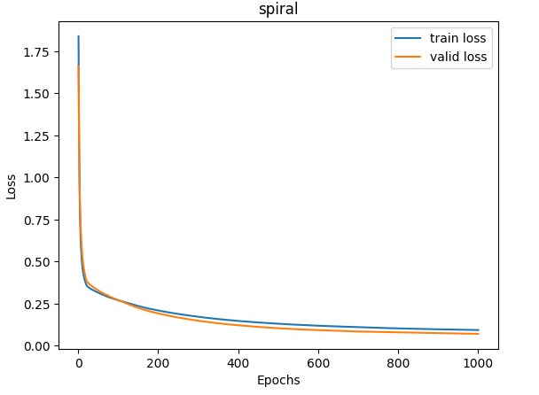
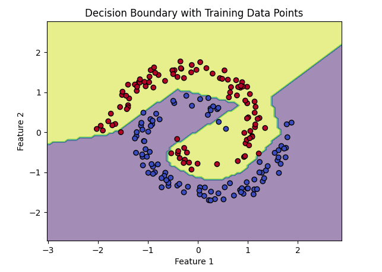
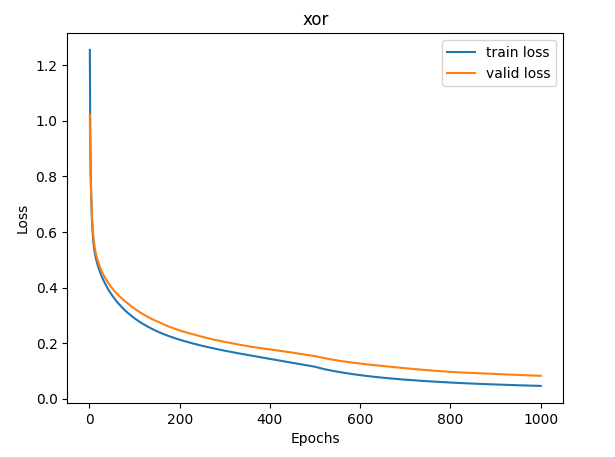
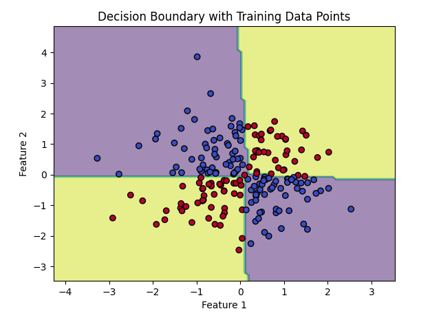
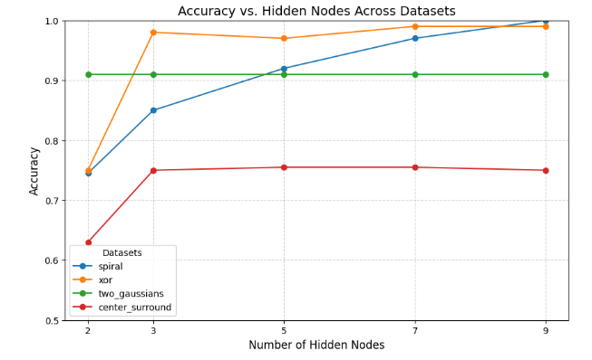
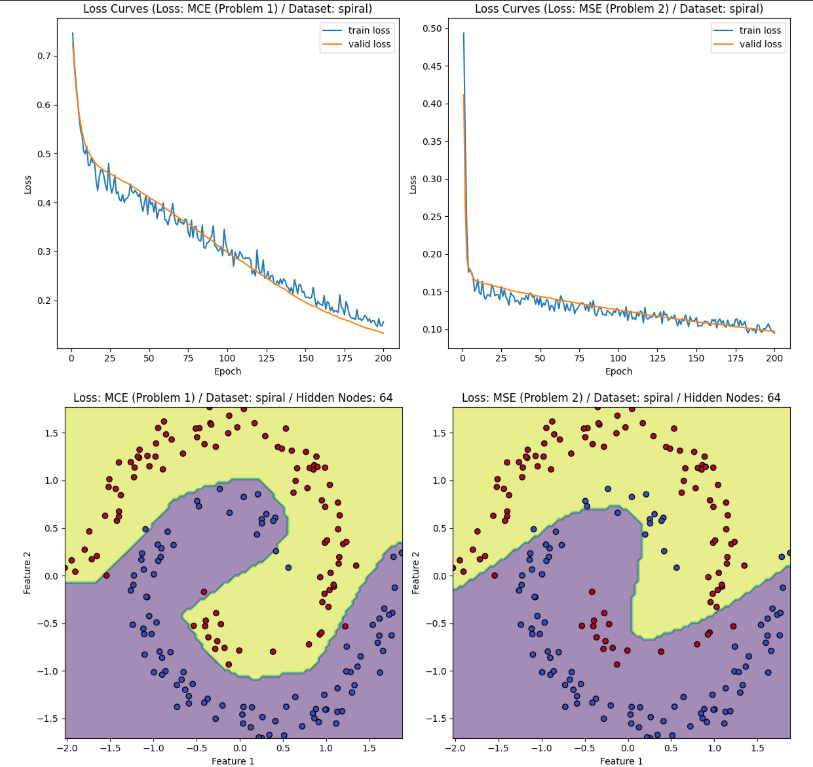
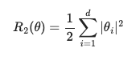
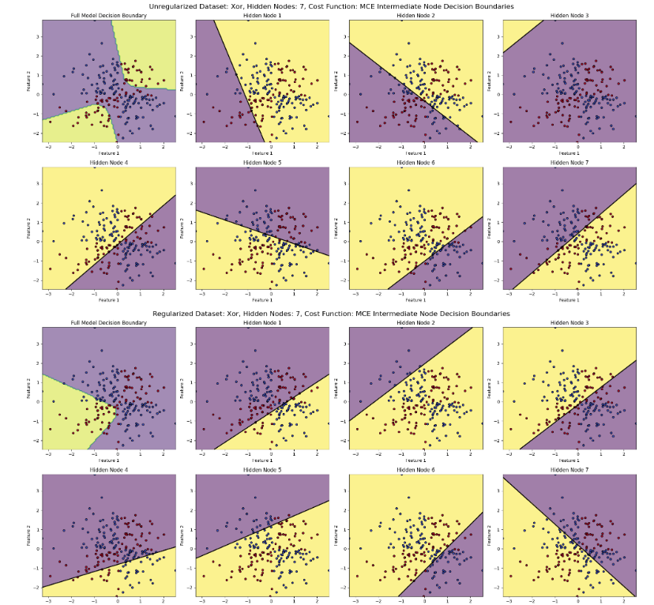

import torch
import pandas as pd
import numpy as np
np.random.seed(42)
torch.manual_seed(42)
from sklearn.preprocessing import StandardScaler
import matplotlib.pyplot as plt
import torch.nn.functional as F
import warnings
warnings.filterwarnings('ignore')
def z_score(df, scaler):
"""
Parameters
----------
df: pd.DataFrame with labels in the first column and features in following columns
scaler: sklearn.preprocessing.StandardScaler fit to the training dataset feature values
Returns
-------
tuple: np.array of scaled features and np.array of labels
"""
features = df.iloc[:, 1:]
labels = df.iloc[:, 0].values
features = scaler.transform(features)
indices_order = np.random.permutation(len(features))
features = features[indices_order]
labels = labels[indices_order]
return features, labels
def label_encoder(labels):
"""
Parameters
----------
labels: np.array of training dataset labels
Returns
-------
dict: with one-hot encoded "numerical encoding: label" key: value pairs
"""
unique_labels = sorted(np.unique(labels))
labels_encoding = {i: l for i, l in enumerate(unique_labels)}
return labels_encoding
def encode_labels(labels, encoder):
"""
Parameters
----------
labels: np.array of training dataset labels
encoder : dict with "numerical encoding: label" key: value pairs
Returns
-------
np.array of encoded labels
"""
return np.array([encoder[l] for l in labels])
def decode_labels(encoded_labels, encoder):
"""
Parameters
----------
encoded_labels: np.array of encoded labels
encoder: dict with "numerical encoding: label" key: value pairs
Returns
-------
np.array: of decoded labels
"""
decoder = {value: key for key, value in encoder.items()}
return np.array([decoder[l] for l in encoded_labels])
def encoded_labels_array(encoded_labels):
"""
Parameters
----------
encoded_labels: np.array of encoded labels
Returns
-------
np.array of encoded labels as arrays (e.g., encoded label 1 becomes [0, 1] and encoded label 0 becomes [1, 0])
"""
num_unique_labels = len(np.unique(encoded_labels))
return np.array([np.array([1 if i == el else 0 for i in range(num_unique_labels)]) for el in encoded_labels])
def softmax(logits):
"""
Parameters
----------
logits: np.array of logits (raw output from output layer)
Returns
-------
np.array: of values after performing softmax (values sum to 1)
"""
exp_logits = np.exp(logits - np.max(logits, axis=1, keepdims=True))
return exp_logits / np.sum(exp_logits, axis=1, keepdims=True)
def mcce(softmax_logits, labels):
"""
Parameters
----------
softmax_logits: np.array of softmaxed logits (class probabilities)
labels: np.array of true labels
Returns
-------
np.float64: Multi-class cross entropy loss
"""
return - np.sum(labels * np.log(softmax_logits)) / labels.shape[0]
def sigmoid(unactivated):
"""
Parameters
----------
unactivated: np.array of unactivated input matrix (output matrix from last layer @ weights)
Returns
-------
np.array: Matrix after performing sigmoid operation on unactivated input matrix
"""
return 1 / (1 + np.exp(-unactivated))
def sigmoid_derivative(activated):
"""
Parameters
----------
activated: np.array of activated input matrix
Returns
-------
np.array: Matrix after performing sigmoid derivative operation on activated input matrix
"""
return sigmoid(activated) * (1 - sigmoid(activated))
def relu(unactivated):
"""
Parameters
----------
unactivated: np.array of unactivated input matrix (output matrix from last layer @ weights)
Returns
-------
np.array: Matrix after performing relu operation on unactivated input matrix
"""
return np.maximum(0, unactivated)
def relu_derivative(activated):
"""
Parameters
----------
activated : np.array of activated input matrix
Returns
-------
np.array: Matrix after performing relu derivative operation on activated input matrix
"""
return (activated > 0).astype(float)
class model:
"""
An object representing a trainable neural network with the follow architecture:
Input Layer (input_size inputs) --> Weights (w_i_h) + Biases (b_i_h) --> ReLU Activation --> Hidden Layer --> Weights (w_h_o) + Biases (b_h_o) --> Softmax activation --> Output
"""
def __init__(self, input_size=2, hidden_size=9, output_size=2):
"""
Parameters
----------
input_size: Optional[int] of input features
hidden_size : Optional[int] of nodes in the hidden layer
output_size : Optional[int] of output features (classes)
"""
shape_i_h = (input_size, hidden_size) # shape of input to hidden layer weights matrix
shape_h_o = (hidden_size, output_size) # shape of hidden to output layer weights matrix
self.w_i_h = np.random.normal(loc=0.0, scale=1.0, size=shape_i_h) # randomly sample unique weights from a gaussian dist with mean 0 and std 1
self.w_h_o = np.random.normal(loc=0.0, scale=1.0, size=shape_h_o) # randomly sample unique weights from a gaussian dist with mean 0 and std 1
self.b_i_h = np.zeros(shape=(1, hidden_size)) # set biases to zero
self.b_h_o = np.zeros(shape=(1, output_size)) # set biases to zero
self.num_params = input_size * hidden_size + hidden_size * output_size + hidden_size + output_size # calculate number of params for fun
def forward(self, features, train=False):
"""
Parameters
----------
features: np.array of examples with each example being an array of feature values
train : Optional[bool] - True if training the network (i.e., if intermediate results are needed to compute gradients), by default False
Returns
-------
np.array: of outputs for each example with each output being an array of class probabilities
"""
forward_results = {}
forward_results['features'] = features
i_h = features @ self.w_i_h
forward_results['i_h'] = i_h
i_h_b = i_h + self.b_i_h
forward_results['i_h_b'] = i_h_b
a_i_h_b = relu(i_h_b)
forward_results['a_i_h_b'] = a_i_h_b
h_o = a_i_h_b @ self.w_h_o
forward_results['h_o'] = h_o
h_o_b = h_o + self.b_h_o
forward_results['h_o_b'] = h_o_b
a_h_o_b = softmax(h_o_b)
forward_results['a_h_o_b'] = a_h_o_b
if train:
return a_h_o_b, forward_results
return a_h_o_b
def backward(self, forward_results, labels):
"""
Parameters
----------
forward_results: dict of all results (input, intermediates, and output) from forward a pass
labels: np.array of encoded labels
Returns
-------
dict: of gradient matrices of weight and bias matrices
"""
gradients = {}
probs = forward_results['a_h_o_b']
dL_dh_o_b = probs - labels
a_i_h_b = forward_results['a_i_h_b']
gradients['w_h_o'] = a_i_h_b.T @ dL_dh_o_b
gradients['b_h_o'] = np.sum(dL_dh_o_b, axis=0, keepdims=True)
dL_da_i_h_b = dL_dh_o_b @ self.w_h_o.T
dL_di_h_b = dL_da_i_h_b * relu_derivative(forward_results['a_i_h_b'])
gradients['w_i_h'] = forward_results['features'].T @ dL_di_h_b
gradients['b_i_h'] = np.sum(dL_di_h_b, axis=0, keepdims=True)
return gradients
def update_weights(self, gradients, learning_rate):
"""
Parameters
----------
gradients: dict of gradient matrices of weight and bias matrices
learning_rate: float that controls the size of the step taken during the update
"""
self.w_h_o -= (learning_rate * gradients['w_h_o'])
self.b_h_o -= (learning_rate * gradients['b_h_o'])
self.w_i_h -= (learning_rate * gradients['w_i_h'])
self.b_i_h -= (learning_rate * gradients['b_i_h'])
def train(self, features, encoded_labels, valid_features, encoded_valid_labels, num_epochs, learning_rate):
"""
Parameters
----------
features: np.array of examples with each example being an array of feature values
encoded_labels: np.array of encoded labels
valid_features: np.array of validation examples with each example being an array of feature values
encoded_valid_labels: np.array of encoded validation labels
num_epochs: int of complete passes over the training dataset to take during training
learning_rate : float that controls the size of the step taken during the update
Returns
-------
tuple: List of train losses for each epoch and list of validation losses for each epoch
"""
encoded_labels_arr = encoded_labels_array(encoded_labels)
encoded_valid_labels_arr = encoded_labels_array(encoded_valid_labels)
train_loss = []
valid_loss = []
for _ in range(num_epochs):
_, forward_results = self.forward(features, train=True)
gradients = self.backward(forward_results, encoded_labels_arr)
self.update_weights(gradients, learning_rate)
loss = mcce(forward_results['a_h_o_b'], encoded_labels_arr)
train_loss.append(loss)
_, forward_results = self.forward(valid_features, train=True)
loss = mcce(forward_results['a_h_o_b'], encoded_valid_labels_arr)
valid_loss.append(loss)
return train_loss, valid_loss
def predict(self, features):
"""
Parameters
----------
features: np.array of examples with each example being an array of feature values
Returns
-------
np.array: of predicted encoded labels
"""
y_predicted = self.forward(features)
predicted_labels = np.array([np.argmax(y_p) for y_p in y_predicted])
return predicted_labels
def accuracy(self, test_features, encoded_test_labels):
"""
Parameters
----------
test_features: np.array of test examples with each example being an array of feature values
encoded_test_labels: np.array of encoded test labels
Returns
-------
float: Accuracy score
"""
test_results = self.predict(test_features)
acc = np.sum([test_result == encoded_test_label for test_result, encoded_test_label in zip(test_results, encoded_test_labels)]) / len(encoded_test_labels)
return acc
def decision_boundary(self, train_features, encoded_train_labels):
"""
Generates a plot showcasing the decision boundary of the model and the training datapoints
Parameters
----------
train_features: np.array of training examples with each example being an array of feature values
encoded_train_labels: np.array of encoded training labels
"""
x_min, x_max = train_features[:, 0].min() - 1, train_features[:, 0].max() + 1
y_min, y_max = train_features[:, 1].min() - 1, train_features[:, 1].max() + 1
xx, yy = np.meshgrid(np.linspace(x_min, x_max, 100), np.linspace(y_min, y_max, 100))
# Predict labels for all points in the meshgrid
grid_points = np.c_[xx.ravel(), yy.ravel()]
Z = self.predict(grid_points)
Z = Z.reshape(xx.shape)
# Plot decision boundary
plt.contourf(xx, yy, Z, alpha=0.5, cmap='viridis')
# Scatter plot of training points
plt.scatter(train_features[:, 0], train_features[:, 1], c=encoded_train_labels, edgecolor='k', cmap='coolwarm', marker='o')
plt.title("Decision Boundary with Training Data Points")
plt.xlabel("Feature 1")
plt.ylabel("Feature 2")
plt.show()
def get_features_and_labels(csv_file_prefix, hidden_size=7, plotting=True):
#print("\n\n\n\n")
#print(f"HIDDEN FOR k={hidden_size}")
# Importing and Scaling
scaler = StandardScaler() # z-score all input features
train_df = pd.read_csv(f'{csv_file_prefix}_train.csv')
train_features = train_df.iloc[:, 1:]
features = scaler.fit(train_features)
valid_df = pd.read_csv(f'{csv_file_prefix}_valid.csv')
test_df = pd.read_csv(f'{csv_file_prefix}_test.csv')
train_features, train_labels = z_score(train_df, scaler)
train_labels_encoder = label_encoder(train_labels)
encoded_train_labels = encode_labels(train_labels, train_labels_encoder)
valid_features, valid_labels = z_score(valid_df, scaler)
valid_labels_encoder = label_encoder(valid_labels)
encoded_valid_labels = encode_labels(valid_labels, valid_labels_encoder)
test_features, test_labels = z_score(test_df, scaler)
test_labels_encoder = label_encoder(test_labels)
encoded_test_labels = encode_labels(test_labels, test_labels_encoder)
# Creating the model
m = model(input_size=len(train_features[0]), hidden_size=hidden_size, output_size=len(np.unique(train_labels)))
num_epochs = 1000
learning_rate = 0.001
train_loss, valid_loss = m.train(train_features, encoded_train_labels, valid_features, encoded_valid_labels, num_epochs, learning_rate)
# Printing the test accuracy
test_accuracy = m.accuracy(test_features, encoded_test_labels)
#print(f"Test Accuracy ({csv_file_prefix}): {test_accuracy}")
if not plotting:
return test_accuracy
# Plotting Loss Curve
plt.plot(range(1, num_epochs + 1), train_loss, label='train loss')
plt.plot(range(1, num_epochs + 1), valid_loss, label='valid loss')
plt.xlabel("Epochs")
plt.ylabel("Loss")
plt.title(csv_file_prefix)
plt.legend()
plt.show()
# Plotting Decision Boundary
m.decision_boundary(train_features, encoded_train_labels)
import collections
hidden_sizes = [2, 3, 5, 7, 9]
loss_by_hidden = collections.defaultdict(lambda: collections.defaultdict(dict)) # {2: {"spiral": 0.123}}
for hidden_size in hidden_sizes:
spiral_accuracy = get_features_and_labels("spiral", hidden_size, plotting=False)
xor_accuracy = get_features_and_labels("xor", hidden_size, plotting=False)
gaussian_accuracy = get_features_and_labels("two_gaussians", hidden_size, plotting=False)
center_accuracy = get_features_and_labels("center_surround", hidden_size, plotting=False)
loss_by_hidden[hidden_size]["spiral"] = spiral_accuracy
loss_by_hidden[hidden_size]["xor"] = xor_accuracy
loss_by_hidden[hidden_size]["two_gaussians"] = gaussian_accuracy
loss_by_hidden[hidden_size]["center_surround"] = center_accuracy
spiral_accuracy = get_features_and_labels("spiral", hidden_size=9)
xor_accuracy = get_features_and_labels("xor", hidden_size=7)
gaussian_accuracy = get_features_and_labels("two_gaussians", hidden_size=2)
center_accuracy = get_features_and_labels("center_surround", hidden_size=5)




datasets = collections.defaultdict(list)
hidden_nodes = sorted(loss_by_hidden.keys())
for nodes in hidden_nodes:
for dataset, accuracy in loss_by_hidden[nodes].items():
datasets[dataset].append(accuracy)
plt.figure(figsize=(10, 6))
for dataset, accuracies in datasets.items():
plt.plot(hidden_nodes, accuracies, marker='o', label=dataset)
plt.title("Accuracy vs. Hidden Nodes Across Datasets", fontsize=14)
plt.xlabel("Number of Hidden Nodes", fontsize=12)
plt.ylabel("Accuracy", fontsize=12)
plt.xticks(hidden_nodes)
plt.ylim(0.5, 1)
plt.legend(title="Datasets", fontsize=10)
plt.grid(True, linestyle='--', alpha=0.6)
# Display the plot
plt.show()

Implementing and training a FFNN using PyTorch. Each task will utilize the same datasets, but will be handled differently throughout. Anything with the value p1 refers to part 1 variables and p2 refers to part 2 varaibles
Part 1 implements Multi-class cross entropy as the cost function
Part 2 implements Mean-squared error as the cost function
We begin by utilizing PyTorch's torch.utils.data.Dataset object to create a custom dataset that could handle our custom integrations of how to handle the data. For part 1, we simply import the dataset, scale it, and convert it to a torch.tensor(). For part 2, we pass a boolean value for 'one_hot' which will convert the labels into one-hot encoded labels.
Please note that we are only scaling based on the features within the training set to allow for higher accuracy from unseen examples.
class SimpleDataset(torch.utils.data.Dataset):
def __init__(self, df, scaler, one_hot=False, transform=None):
super().__init__()
self.features = df.iloc[:, 1:]
self.labels = df.iloc[:, 0]
self.features = scaler.transform(self.features)
self.transform = transform
self.one_hot = one_hot
def __len__(self):
return len(self.labels)
def __getitem__(self, idx):
feature = torch.tensor(self.features[idx], dtype=torch.float32)
label = torch.tensor(self.labels[idx], dtype=torch.long)
if self.one_hot:
one_hot_label = F.one_hot(label, num_classes=2).float() # one-hot encoding the labels so we can perform MSELoss on this... tensor([0., 1.])) is 1 and tensor([1., 0.])) is 0
return feature, one_hot_label
else:
return feature, label
We define our simple feed forward network as having one hidden layer with a ReLU activation function.
We then define our different loss functions and optimization functions below. MCE for part 1 and MSE for part 2. Adam for part 1 and SGD for part 2.
class SimpleNN(torch.nn.Module):
def __init__(self, input_size, hidden_size, output_size):
super().__init__()
self.f1 = torch.nn.Linear(input_size, hidden_size)
self.relu = torch.nn.ReLU()
self.f2 = torch.nn.Linear(hidden_size, output_size)
def forward(self, x):
x = self.f1(x)
x = self.relu(x)
x = self.f2(x)
return x
This function handles the learning aspect of our neural network, such that for each epoch, we run our features through the model to get our predictions, then obtain the loss for this iteration. After computing the loss, we are able to backpropogate through the network to learn the gradients, and then update it for the next step.
def train(model, train_loader, valid_loader, num_epochs, criterion, optimizer):
"""
Parameters
----------
model: Pytorch nn.Module model
train_loader: training set as a DataLoader()
valid_loader: validation set as a DataLoader()
num_epochs: Number of epochs
criterion: Loss function
optimizer: Optimization function
"""
train_losses = []
valid_losses = []
for epoch in range(num_epochs):
model.train()
running_train_loss = 0.0
for features, labels in train_loader:
optimizer.zero_grad()
outputs = model(features)
loss = criterion(outputs, labels)
loss.backward()
optimizer.step()
running_train_loss += loss.item()
epoch_train_loss = running_train_loss / len(train_loader)
train_losses.append(epoch_train_loss)
model.eval()
running_valid_loss = 0.0
with torch.no_grad():
for features, labels in valid_loader:
outputs = model(features)
loss = criterion(outputs, labels)
running_valid_loss += loss.item()
epoch_valid_loss = running_valid_loss / len(valid_loader)
valid_losses.append(epoch_valid_loss)
if (epoch + 1) % 50 == 0:
print(f"Epoch {epoch+1}/{num_epochs}, Train Loss: {epoch_train_loss:.4f}, Valid Loss: {epoch_valid_loss:.4f}")
return train_losses, valid_losses
This function handles the learning aspect of our neural network, such that for each epoch, we run our features through the model to get our predictions, then obtain the loss for this iteration. After computing the loss, we are able to backpropogate through the network to learn the gradients, and then update it for the next step.
def test_accuracy_p1(model, test_loader):
"""
Parameters
----------
model: Pytorch nn.Module model
test_loader: test set as a DataLoader()
"""
model.eval()
correct_test = 0
total_test = 0
with torch.no_grad():
for features, labels in test_loader:
outputs = model(features)
_, predicted = torch.max(outputs.data, 1)
total_test += labels.size(0)
correct_test += (predicted == labels).sum().item()
test_accuracy = 100 * correct_test / total_test
return test_accuracy
def test_accuracy_p2(model, test_loader):
model.eval()
correct_test = 0
total_test = 0
with torch.no_grad():
for features, one_hot_labels in test_loader:
outputs = model(features)
_, predicted = torch.max(outputs, 1)
labels = torch.argmax(one_hot_labels, dim=1)
total_test += labels.size(0)
correct_test += (predicted == labels).sum().item()
test_accuracy = 100 * correct_test / total_test
return test_accuracy
def plot_loss_curves_1x2_fixed(train_losses,
valid_losses,
titles,
num_epochs):
fig, axes = plt.subplots(1, 2, figsize=(12, 6))
axes = axes.ravel()
for i, ax in enumerate(axes):
ax.plot(list(range(1, num_epochs + 1)), train_losses[i], label='train loss')
ax.plot(list(range(1, num_epochs + 1)), valid_losses[i], label='valid loss')
ax.set_title(f'Loss Curves ({titles[i]})')
ax.set_xlabel('Epoch')
ax.set_ylabel('Loss')
ax.legend()
plt.tight_layout()
plt.show()
def plot_decision_boundaries_1x2_fixed(models,
loaders,
titles,
encoding_flags):
fig, axes = plt.subplots(1, 2, figsize=(12, 6))
axes = axes.ravel()
for i, ax in enumerate(axes):
model = models[i]
train_loader = loaders[i]
title = titles[i]
encode = encoding_flags[i]
y_min, y_max = train_loader.dataset.features[:, 1].min(), train_loader.dataset.features[:, 1].max()
x_min, x_max = train_loader.dataset.features[:, 0].min(), train_loader.dataset.features[:, 0].max()
xx, yy = np.meshgrid(np.linspace(x_min, x_max, 100), np.linspace(y_min, y_max, 100))
grid_points = torch.tensor(np.c_[xx.ravel(), yy.ravel()], dtype=torch.float32)
with torch.no_grad():
Z = model(grid_points)
Z = Z.argmax(dim=1).numpy()
Z = Z.reshape(xx.shape)
ax.contourf(xx, yy, Z, alpha=0.5, cmap='viridis')
for inputs, label in train_loader:
inputs = inputs.numpy()
labels = label.numpy()
if encode:
labels = label.argmax(dim=1).numpy()
ax.scatter(inputs[:, 0], inputs[:, 1], c=labels, edgecolor='k', cmap='coolwarm', marker='o')
ax.set_title(title)
ax.set_xlabel("Feature 1")
ax.set_ylabel("Feature 2")
plt.tight_layout()
plt.show()
lambda_val = 0.003
def p1(csv_file_prefix,
batch_size = 32,
hidden_size = 64,
lr=0.001,
num_epochs = 200):
scaler = StandardScaler() # z-score all input features
train_df = pd.read_csv(f'{csv_file_prefix}_train.csv')
valid_df = pd.read_csv(f'{csv_file_prefix}_valid.csv')
test_df = pd.read_csv(f'{csv_file_prefix}_test.csv')
train_features = train_df.iloc[:, 1:]
features = scaler.fit(train_features)
train_dataset_p1 = SimpleDataset(df=train_df, scaler=scaler, one_hot=False)
valid_dataset_p1 = SimpleDataset(df=valid_df, scaler=scaler, one_hot=False)
test_dataset_p1 = SimpleDataset(df=test_df, scaler=scaler, one_hot=False)
train_dataset_p2 = SimpleDataset(df=train_df, scaler=scaler, one_hot=True)
valid_dataset_p2 = SimpleDataset(df=valid_df, scaler=scaler, one_hot=True)
test_dataset_p2 = SimpleDataset(df=test_df, scaler=scaler, one_hot=True)
train_loader_p1 = torch.utils.data.DataLoader(train_dataset_p1, batch_size=batch_size, shuffle=True)
valid_loader_p1 = torch.utils.data.DataLoader(valid_dataset_p1, batch_size=batch_size, shuffle=False)
test_loader_p1 = torch.utils.data.DataLoader(test_dataset_p1, batch_size=batch_size, shuffle=False)
train_loader_p2 = torch.utils.data.DataLoader(train_dataset_p2, batch_size=batch_size, shuffle=True)
valid_loader_p2 = torch.utils.data.DataLoader(valid_dataset_p2, batch_size=batch_size, shuffle=False)
test_loader_p2 = torch.utils.data.DataLoader(test_dataset_p2, batch_size=batch_size, shuffle=False)
input_size = train_dataset_p1.features.shape[1]
output_size = len(set(train_dataset_p1.labels))
model_p1_no_reg = SimpleNN(input_size, hidden_size, output_size)
model_p1_with_reg = SimpleNN(input_size, hidden_size, output_size)
model_p2_no_reg = SimpleNN(input_size, hidden_size, output_size)
model_p2_with_reg = SimpleNN(input_size, hidden_size, output_size)
criterion_p1 = torch.nn.CrossEntropyLoss()
criterion_p2 = torch.nn.MSELoss()
optimizer_p1_no_reg = torch.optim.Adam(model_p1_no_reg.parameters(), lr=lr)
optimizer_p1_with_reg = torch.optim.Adam(model_p1_with_reg.parameters(), lr=lr)
optimizer_p2_no_reg = torch.optim.SGD(model_p2_no_reg.parameters(), lr=lr, momentum=0.9)
optimizer_p2_with_reg = torch.optim.SGD(model_p2_with_reg.parameters(), lr=lr, momentum=0.9)
train_losses_p1_no_reg, valid_losses_p1_no_reg = train(model_p1_no_reg, train_loader_p1, valid_loader_p1, num_epochs, criterion_p1, optimizer_p1_no_reg)
train_losses_p1_with_reg, valid_losses_p1_with_reg = train(model_p1_with_reg, train_loader_p1, valid_loader_p1, num_epochs, criterion_p1, optimizer_p1_with_reg)
train_losses_p2_no_reg, valid_losses_p2_no_reg = train(model_p2_no_reg, train_loader_p2, valid_loader_p2, num_epochs, criterion_p2, optimizer_p2_no_reg)
train_losses_p2_with_reg, valid_losses_p2_with_reg = train(model_p2_with_reg, train_loader_p2, valid_loader_p2, num_epochs, criterion_p2, optimizer_p2_with_reg)
test_acc_p1 = test_accuracy_p1(model_p1_no_reg, test_loader_p1)
test_acc_p2 = test_accuracy_p2(model_p2_no_reg, test_loader_p2)
print(f"Loss: MCE (Problem 1) / Dataset: {csv_file_prefix} / Test Accuracy: ", test_acc_p1)
print(f"Loss: MSE (Problem 2) / Dataset: {csv_file_prefix} / Test Accuracy: ", test_acc_p2)
# Loss curves
train_losses = [
train_losses_p1_no_reg,
train_losses_p2_no_reg,
]
valid_losses = [
valid_losses_p1_no_reg,
valid_losses_p2_no_reg,
]
titles = [
f"Loss: MCE (Problem 1) / Dataset: {csv_file_prefix}",
f"Loss: MSE (Problem 2) / Dataset: {csv_file_prefix}",
]
plot_loss_curves_1x2_fixed(
train_losses,
valid_losses,
titles,
num_epochs
)
# Decision Boudaries
models = [model_p1_no_reg, model_p2_no_reg]
loaders = [train_loader_p1, train_loader_p2]
titles = [
f"Loss: MCE (Problem 1) / Dataset: {csv_file_prefix} / Hidden Nodes: {hidden_size}",
f"Loss: MSE (Problem 2) / Dataset: {csv_file_prefix} / Hidden Nodes: {hidden_size}"
]
encoding_flags = [False, True]
plot_decision_boundaries_1x2_fixed(
models,
loaders,
titles,
encoding_flags
)
csv_file_prefix = 'spiral'
# csv_file_prefix = 'two_gaussians'
# csv_file_prefix = 'xor'
# csv_file_prefix = 'center_surround'
batch_size = 32
hidden_size = 64
lr=0.001
num_epochs = 200
lambda_val = 0.003
p1(csv_file_prefix, batch_size=batch_size, hidden_size=hidden_size, lr=lr, num_epochs=num_epochs)

L2-regularization is used to increase bias and decrease variance within the model to help limit overfitting the dataset in order to help generalize better over new examples.
L2-Regularization:

if l2_regularization:
reg = lambda_val * torch.sum(model.f1.weight ** 2)
loss = loss + reg
